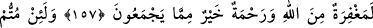

CANI VEREN DE
ALAN DA ALLAH’TIR
156. Ey îman edenler! Sizler, inkâr edenler ve yeryüzünde sefere çıkan veya
savaşan kardeşleri hakkında; “Eğer bizim yanımızda kalsalardı ölmezler,
öldürülmezlerdi” diyenler gibi olmayın. Allah bu kanaati onların kalplerine
(kaybettikleri yakınları için onulmaz) bir hasret (yarası) olarak koydu. Canı veren
de, alan da Allah’dır. Allah, yaptıklarınızı hakkıyla görür.
157. Eğer Allah yolunda öldürülür ya da ölürseniz, şunu bilin ki, Allah’ın
mağfireti ve rahmeti onların topladıkları bütün şeylerden daha hayırlıdır.
158. Andolsun, ölseniz de öldürülseniz de Allah’ın huzûrunda toplanacaksınız.
Âyette anılan “İnkâr edenler; bu işten bize bir şey olsaydı burada öldürülmezdik.”
diyen münâfıklardır. Yeryüzünde sefere çıkan, ticâret veya başka maksatlar için
yolculuğa çıkıp da yolda ölenler, ya da savaşa çıkan gazi ve öldürülen kardeşleri için
“Eğer bizim yanımızda olsalardı, yolculuk ederken ölmezlerdi, savaşta da
öldürülmezlerdi.” diyenler gibi olmayın.
Bu âyet-i kerîmede, bu sözü telâffuz etme konusunda münâfıklara benzemek değil,
bilakis bu sözün taşıdığı mânaya inanmak ve mûcibince hükmetmek yasaklanmaktadır.
“Sonuçta Allah, onların bu sözlerini kalplerine dert yapar.” Buradaki lâm, bir lâm-ı
âkıbet olarak ( __WORD__ dediler) fiiline mütealliktir. “Onu büyüttüm, sonunda bana eziyet
etti” sözünde olduğu gibi. Bu “lâm” illet ve maksat bildiren “lâm” değildir. Çünkü bu
sözü, Allah kalplerine dert yapsın diye değil bilakis mü’minleri cihaddan geri bırakmak
için söylemişlerdir. Âyetin mânası şudur: “Münâfıklar bu sözü, maksatlarından bir
maksat için, inanarak söylemişler, fakat bu sözün vardığı yer ve âkıbeti hasret olmuştur.
O hasret ki insanın gücünü kıran en şiddetli pişmanlıktır.”
Âyette zikredilen ta’lilden (gerekçelendirmeden) maksat, bu sözleri ile hiçbir fayda
sağlayamayacaklarını beyân etmektir. Bu sözün, kalplerinde dert ve pişmanlık olması şu